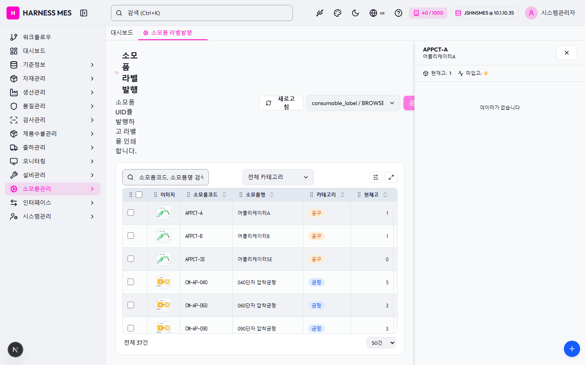

Route: /consumables/label
Status: PASS / HTTP 200
| 기능/버튼 | 처리 방식 | 상태 | 비고 |
|---|---|---|---|
| 화면 로드 | GET /consumables/label | 실행 | HTTP 200 |
| 라우트 prewarm | 직접 HTTP 확인 | 실행 | HTTP 200, 197ms |
| 초기 API 호출 | 브라우저 네트워크 수집 | 실행 | 12건 |
| 🇰🇷 | 화면 버튼 목록화 | 목록화 | 후속 메뉴별 세부 시나리오 실행 대상 |
| 시스템관리자 | 화면 버튼 목록화 | 목록화 | 후속 메뉴별 세부 시나리오 실행 대상 |
| 워크플로우 | 화면 버튼 목록화 | 목록화 | 후속 메뉴별 세부 시나리오 실행 대상 |
| 대시보드 | 화면 버튼 목록화 | 목록화 | 후속 메뉴별 세부 시나리오 실행 대상 |
| 기준정보 | 화면 버튼 목록화 | 목록화 | 후속 메뉴별 세부 시나리오 실행 대상 |
| 자재관리 | 화면 버튼 목록화 | 목록화 | 후속 메뉴별 세부 시나리오 실행 대상 |
| 생산관리 | 화면 버튼 목록화 | 목록화 | 후속 메뉴별 세부 시나리오 실행 대상 |
| 품질관리 | 화면 버튼 목록화 | 목록화 | 후속 메뉴별 세부 시나리오 실행 대상 |
| 검사관리 | 화면 버튼 목록화 | 목록화 | 후속 메뉴별 세부 시나리오 실행 대상 |
| 제품수불관리 | 화면 버튼 목록화 | 목록화 | 후속 메뉴별 세부 시나리오 실행 대상 |
| 출하관리 | 화면 버튼 목록화 | 목록화 | 후속 메뉴별 세부 시나리오 실행 대상 |
| 모니터링 | 화면 버튼 목록화 | 목록화 | 후속 메뉴별 세부 시나리오 실행 대상 |
| 설비관리 | 화면 버튼 목록화 | 목록화 | 후속 메뉴별 세부 시나리오 실행 대상 |
| 소모품관리 | 화면 버튼 목록화 | 목록화 | 후속 메뉴별 세부 시나리오 실행 대상 |
| 인터페이스 | 화면 버튼 목록화 | 목록화 | 후속 메뉴별 세부 시나리오 실행 대상 |
| 시스템관리 | 화면 버튼 목록화 | 목록화 | 후속 메뉴별 세부 시나리오 실행 대상 |
| 소모품 라벨발행 | 화면 버튼 목록화 | 목록화 | 후속 메뉴별 세부 시나리오 실행 대상 |
| 새로고침 | 화면 버튼 목록화 | 목록화 | 후속 메뉴별 세부 시나리오 실행 대상 |
| UID 발행 | 화면 버튼 목록화 | 목록화 | 후속 메뉴별 세부 시나리오 실행 대상 |
| 전체화면 보기 | 화면 버튼 목록화 | 목록화 | 후속 메뉴별 세부 시나리오 실행 대상 |
| AI 채팅 | 화면 버튼 목록화 | 목록화 | 후속 메뉴별 세부 시나리오 실행 대상 |
| 개선요청 등록 | 화면 버튼 목록화 | 목록화 | 후속 메뉴별 세부 시나리오 실행 대상 |
| 입력 필드 | DOM 수집 | 목록화 | 77개 |
| 선택 필드 | DOM 수집 | 목록화 | 3개 |
| 목록/그리드 | DOM 수집 | 목록화 | table 1, grid 0 |
| Method | URL | Status | OK |
|---|---|---|---|
| GET | /api/health | 200 | OK |
| GET | /api/db-info | 200 | OK |
| GET | /api/health | 200 | OK |
| GET | /api/db-info | 200 | OK |
| GET | /api/system/comm-configs?commType=SERIAL&useYn=Y | 200 | OK |
| GET | /api/auth/me | 200 | OK |
| GET | /api/system/configs/active | 200 | OK |
| GET | /api/menu-categories/tree | 200 | OK |
| GET | /api/master/label-templates?category=jig | 200 | OK |
| GET | /api/consumables/label/masters | 200 | OK |
| GET | /api/master/com-codes/all-active | 200 | OK |
| GET | /api/consumables/stocks?search=APPCT-A&limit=200 | 200 | OK |
requestfailed: GET /api/db-info net::ERR_ABORTED requestfailed: GET https://fonts.gstatic.com/s/outfit/v15/QGYvz_MVcBeNP4NJtEtq.woff2 net::ERR_ABORTED

H HARNESS MES 🇰🇷 40 / 1000 JSHNSMES @ 10.1.10.35 시스템관리자 워크플로우 대시보드 기준정보 자재관리 생산관리 품질관리 검사관리 제품수불관리 출하관리 모니터링 설비관리 소모품관리 인터페이스 시스템관리 대시보드 소모품 라벨발행 소모품 라벨발행 소모품 UID를 발행하고 라벨을 인쇄합니다. 새로고침 전체 기본 디자인 consumable_label / BROWSER UID 발행 전체 카테고리 JIG MOLD TOOL 이미지 소모품코드 소모품명 카테고리 현재고 인스턴스 발행수량 APPCT-A 어플리케이터A 공구 1 0 APPCT-B 어플리케이터B 공구 1 0 APPCT-SE 어플리케이터SE 공구 0 0 CM-AP-040 040단자 압착금형 금형 5 0 CM-AP-060 060단자 압착금형 금형 3 0 CM-AP-090 090단자 압착금형 금형 3 0 CM-AP-110 110단자 압착금형 금형 3 0 CM-AP-187 187단자 압착금형 금형 3 0 CM-AP-250 250단자 압착금형 금형 3 0 CM-BL-F01 평블레이드 세트 (절단용) 공구 8 0 CM-BL-MC1 다선절단 블레이드 세트 공구 8 0 CM-BL-S01 탈피 블레이드 세트 (V타입) 공구 8 0 CM-BL-S02 탈피 블레이드 세트 (로터리) 공구 8 0 CM-BL-V01 V블레이드 세트 (절단용) 공구 8 0 CM-FL-A01 에어 필터 엘리먼트 공구 8 0 CM-FL-D01 집진 필터 백 공구 8 0 CM-IJ-I01 잉크젯 잉크 카트리지 공구 8 0 CM-IJ-N01 잉크젯 노즐 세트 공구 8 0 CM-JG-CT1 통전검사 치구 A타입 지그 5 0 CM-JG-CT2 통전검사 치구 B타입 지그 5 0 CM-JG-HV1 내전압검사 치구 지그 5 0 CM-JG-SL1 씰삽입 가이드 지그 지그 5 0 CM-JG-TW1 트위스트 고정 지그 지그 5 0 CM-PH-B01 써멀 프린트헤드 (Brady) 공구 8 0 CM-PH-Z01 써멀 프린트헤드 (Zebra) 공구 8 0 CM-ST-T01 납땜 인두팁 (자동납땜용) 공구 8 0 CM-UW-A01 초음파 앤빌 공구 8 0 CM-UW-H01 초음파 혼 (Sonotrode) 공구 8 0 CUTBL001 커터날1 공구 0 0 CUTBL002 커터날2 공구 0 0 CUTBL003 커터날3 공구 0 0 CUTBL004 커터날4 공구 0 0 CUTBL009 커터날9 공구 0 0